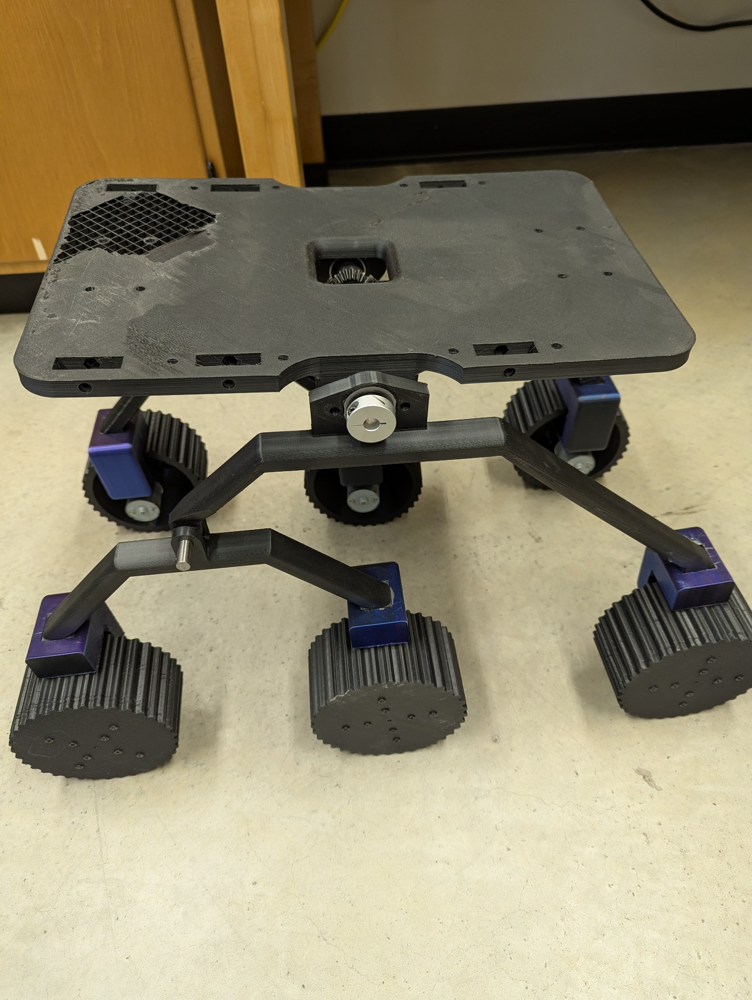
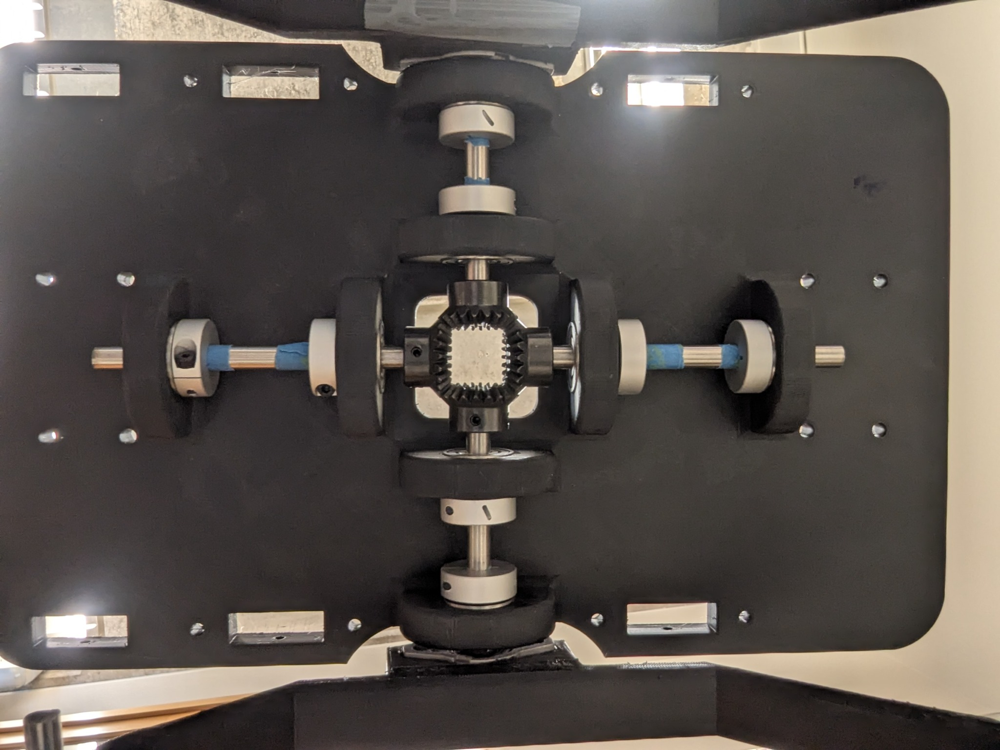

Aerial reconnaissance
The drone is intended to capture overhead imagery while maintaining low-level flight stability.
ROBOTICS / RESEARCH / AUTONOMOUS SYSTEMS
Exploring how an aerial scout and ground rover can work together to navigate unfamiliar terrain in future planetary exploration missions.

01 / OVERVIEW
Ground rovers can carry instruments and explore for extended periods, but obstacles and uneven terrain can limit their movement. Drones can survey terrain from above, although their flight time and payload are constrained. MARS proposes combining these strengths in a cooperative aerial-ground research platform.
The planned system uses a tethered drone to capture aerial imagery and a ground rover to process that information for mapping, route planning, and navigation. The project is still in development, the full integrated autonomous system is a research goal, not a completed result.
02 / SYSTEM DESIGN
The drone is intended to capture overhead imagery while maintaining low-level flight stability.
The rover is designed to transform imagery into terrain maps, evaluate travel costs, and plan routes using methods such as Theta*.
The proposed tether supports communication and power delivery between the aerial and ground platforms.
These are proposed capabilities described in the project proposal; individual subsystems are being developed and tested.
03 / DEVELOPMENT & TESTING
Current work includes mechanical development and drone flight testing as the team evaluates individual components before full integration.

Drone flight testing. Early footage recorded while the team evaluates autonomous flight behavior. The video documents a test flight but does not, by itself, establish the degree of autonomous control.
04 / MY INVOLVEMENT
As part of the MARS research team, I am currently focusing on the tether system and the challenge of keeping the drone stable as it lands on different terrain surfaces. This work is still underway, and I hope to document the design decisions, testing process, and results as the system develops.
05 / WHAT'S NEXT
The team aims to integrate the aerial and ground platforms, investigate terrain mapping and path planning, and evaluate navigation reliability in challenging environments. Future updates to this page will distinguish measured results from planned milestones.
06 / RESEARCH APPROACH
The proposed rover navigation pipeline includes aerial image acquisition, weighted terrain mapping, Theta* path planning, slope-aware cost evaluation, spline-based trajectory smoothing, and closed-loop motion control. These are research objectives, not completed or validated features.
Our ongoing development work is focused on subsystem testing and integration. More technical results and documentation will be added as the research progresses.